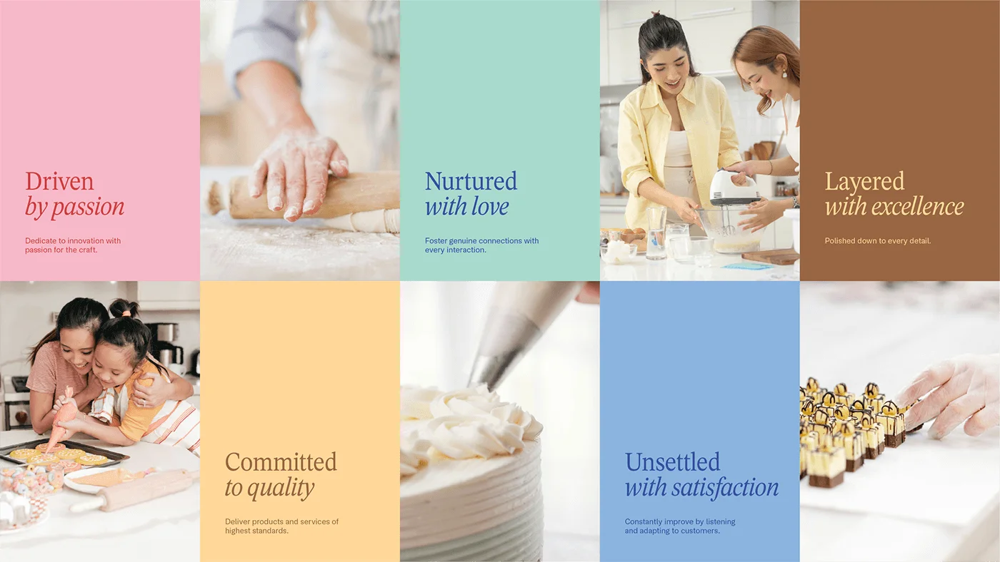
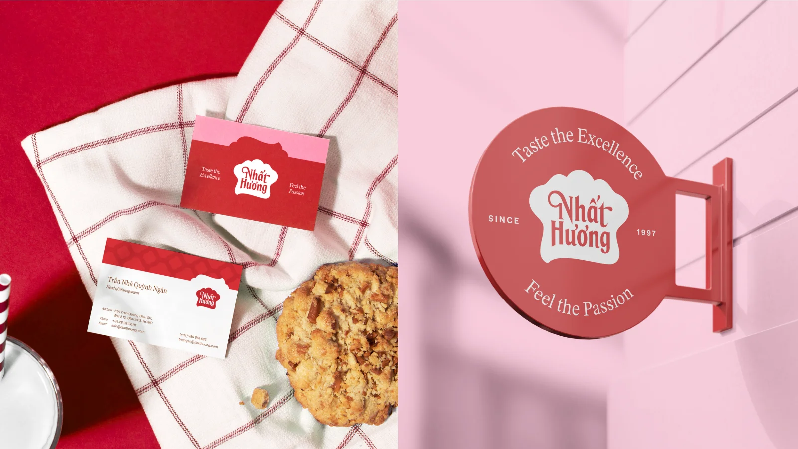

Nhat Huong Bakery — a legacy brand learns to say why
Since 1998, Nhat Huong has led the Vietnamese baking industry — a trailblazer that broke foreign dominance and grew into a full ecosystem of production, education, and distribution. I worked as part of a team to redesign its visual identity: honoring the legacy while giving the brand a voice that carries into new markets.

Driven by a passion for baking, Nhat Huong had always poured itself into product excellence rather than brand building. Our job was to close that gap: reflect the comprehensive ecosystem — from production and education to distribution — and empower the brand's mission to spread the joy of baking, rooted in Vietnam, yet ready to make its mark internationally.
LEGACY
Nhat Huong disrupted foreign dominance in the domestic market with bold innovation — and its pride is national pride. We put that front and center: Tự hào Thương hiệu Việt Nam — proudly a Vietnamese brand. Proudly disrupt, proudly build, proudly deliver, proudly develop, proudly serve.

STRATEGY
By diving deep into Nhat Huong's story, we uncovered an opportunity to spotlight its core values and its impact on the community. We envisioned the refreshed brand as an Inspirer — committed to empowering individuals and uplifting society through baking. Just as the beauty of baking lies in the hours of preparation behind a finished cake, 70% of our design work focused on the “why” behind every creative decision.

REFRESH
The iconic chef's-hat shape stays — it had earned its place as a mark of passion and the highest Vietnamese quality in the baking community. But its proportions and typography were refined: the characters now connect seamlessly and are optimized for every size, and the hat's brim carries a more natural curve that lets the text follow its contour gracefully.
TYPE
Nhat Huong's iconic red stays at the heart of the identity, joined by a vibrant pink to form the primary pair. Around them, a broader supporting system — every family named like something from the bakery case:
- Sweet Red & Candy Pink — the primary pair: heritage red, warmed up
- Cream Yellow, Frost Mint, Milky Blue — the fresh, dairy-soft supporting cast
- Chocolate Brown, Blueberry Navy, Taro Purple — depth for premium lines
- Type — a strong, dependable serif carries the heritage; a clean, friendly sans keeps every platform readable

SYSTEM
The graphics capture the artistry of a pastry chef: piped, dolloped, organic shapes — one per product group — that transform into versatile patterns for packaging and platforms. Cream, cake base, sauce, cheese, frozen goods: each line gets a silhouette you could recognize from across the supermarket aisle.

Product lines are organized by color, pattern, and graphic element — with a range this diverse, structure is what keeps the shelf coherent. From dieline to supermarket, the system holds:


WILD
A brand for a baking ecosystem lives everywhere the flour goes — totes and delivery trucks, bus stops and business cards, and a social feed that keeps the whole system in rotation:





A 25-year-old brand doesn't need a new personality — it needs its existing one articulated well enough to travel.